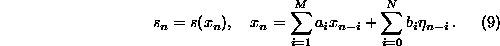
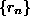
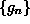
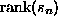
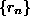
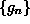
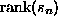
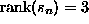
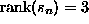
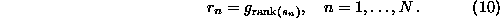

The two null hypotheses discussed so far (independent random numbers and
Gaussian linear processes) are not what we want to test against in most
realistic situations. In particular, the most obvious deviation from the
Gaussian linear process is usually that the data do not follow a Gaussian
single time probability distribution. This is quite obvious for data obtained
by measuring intervals between events, e.g. heart beats since intervals are
strictly positive. There is however a simple generalisation of the null
hypothesis that explains deviations from the normal distribution by the action
of an invertible, static measurement function:

We want to regard a time series from such a process as essentially linear since
the only nonlinearity is contained in the -- in principle invertible --
measurement function  .
.
Let us mention right away that the restriction that  must be
invertible is quite severe and often undesired. The reason why we have to
impose it is that otherwise we couldn't give a complete specification of the
process in terms of observables and constraints. The problem is further
illustrated in Sec. 7.1 below.
must be
invertible is quite severe and often undesired. The reason why we have to
impose it is that otherwise we couldn't give a complete specification of the
process in terms of observables and constraints. The problem is further
illustrated in Sec. 7.1 below.
The most common method to create surrogate data sets for this null hypothesis
essentially attempts to invert  by rescaling the time series
by rescaling the time series
 to conform with a Gaussian distribution. The rescaled version is
then phase randomised (conserving Gaussianity on average) and the result is
rescaled to the empirical distribution of
to conform with a Gaussian distribution. The rescaled version is
then phase randomised (conserving Gaussianity on average) and the result is
rescaled to the empirical distribution of  . The rescaling is done by
simple rank ordering. Suppose we want to rescale the sequence
. The rescaling is done by
simple rank ordering. Suppose we want to rescale the sequence  so that
the rescaled sequence  takes on the same values as some reference
sequence  (e.g. draws from a Gaussian distribution). Let be
sorted in ascending order and  denote the ascending rank of
so that
the rescaled sequence  takes on the same values as some reference
sequence  (e.g. draws from a Gaussian distribution). Let be
sorted in ascending order and  denote the ascending rank of
 , e.g.  if
, e.g.  if  is the 3rd smallest element of
is the 3rd smallest element of
 . Then the rescaled sequence is given by
. Then the rescaled sequence is given by

The amplitude adjusted Fourier transform (AAFT) method has been
originally proposed by Theiler et al. [6]. It results in a
correct test when N is large, the correlation in the data is not too strong
and  is close to the identity. Otherwise, there is a certain bias
towards a too flat spectrum, to be discussed in the following section.
is close to the identity. Otherwise, there is a certain bias
towards a too flat spectrum, to be discussed in the following section.